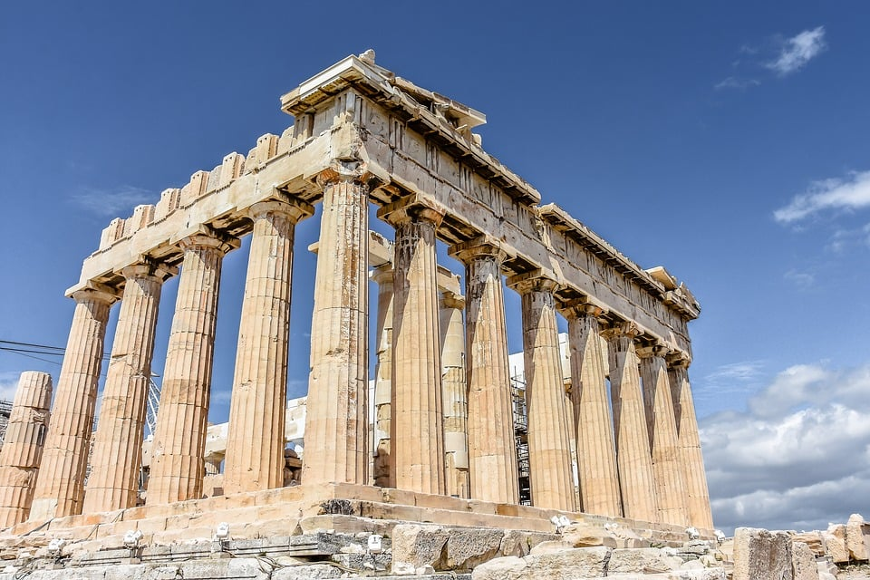
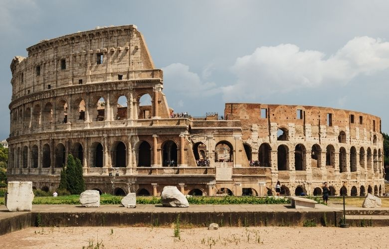
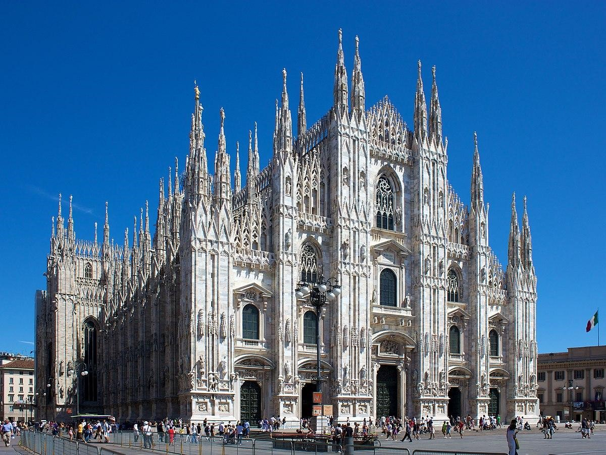

Grega Clássica

A Arquitetura Grega Clássica é conhecida por suas colunas elegantes e proporções harmoniosas. Os três
estilos de colunas predominantes são o dórico, jônico e coríntio. Os edifícios gregos frequentemente
apresentavam frontões triangulares, frisos decorativos e uso extensivo de mármore. A simetria e a busca
pela perfeição eram fundamentais na estética grega.
Arquitetura Romana

A Arquitetura Romana incorporou muitos elementos da arquitetura grega, como colunas e arcos, mas também
desenvolveu características distintas. Os romanos foram pioneiros na construção de abóbadas, cúpulas e
arcos. Os edifícios romanos eram grandiosos e funcionais, frequentemente revestidos com mármore e
decorados com esculturas.
Arquitetura Gótica

A Arquitetura Gótica é um estilo arquitetônico que floresceu durante a Idade Média, principalmente entre
os séculos XII e XV. Suas características distintivas incluem arcos ogivais (ou apontados), vitrais
coloridos, abóbadas de cruzaria, arcobotantes e detalhes ornamentados. A busca por alturas
impressionantes era uma das principais metas do estilo gótico.